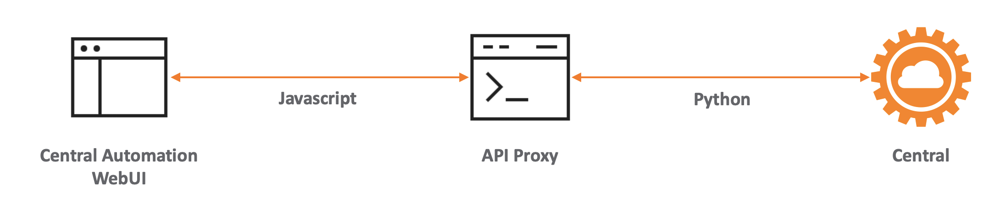
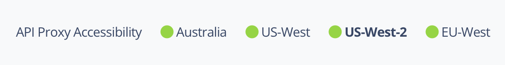
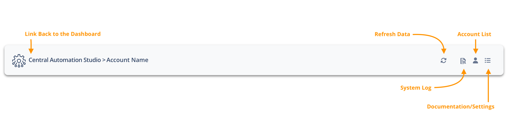

Getting Started
Overview
A user-friendly frontend to the HPE Aruba Networking New Central APIs.
The site is made up of modules that encompass various tasks to show various use cases utilizing the REST APIs built into Aruba Central. Some tasks have some prerequisites to be able to function correctly. These are noted in the documentation below.
New features will be constantly added. Check the Change Log for the latest updates
In order for you to use this WebUI, you will need to obtain some API information from your HPE GreenLake workspace.
Follow the steps in the Aruba DevHub on creating an API Client Credentials.
Obtain the Client ID and Client Secret when you created them in the HPE GreenLake platform. Enter the information into a new Account on the Central Automation Studio Settings page along with selecting the right Central Cluster. Save to test the connection to New Central.
System Architecture
The system is designed in two pieces. The WebUI (where you are reading this documentation from) and an API Proxy Server.

The WebUI uses Javascript to make API calls to the API Proxy Server. The API Proxy Server converts those Javascript requests into Python API calls and makes the call to New Central, returning any data back to the WebUI for processing in Javascript.
Multiple API Proxy Servers exist for speed and redundancy. The API Proxy Server used depends on the Central instance being communicated with:
- APAC-based Central Cluster = Australia (Hosted in Sydney - Azure Australia East)
- US-based Central Clusters = US-West, US-West-2 (Both hosted in Washington - Azure US West 2)
- EU-based Central Cluster = EW-West (Hosted in Amsterdam - Azure Europe West)
API Proxy Server Accessibility is available in the footer of each page. The highlighted proxy is the currently active proxy for your account:

System Security
All API credentials and logs are maintained in the local storage of your web browser. The Central Automation Studio WebServer or the API Proxy service does not store any credentials, data or logs from your use of this WebUI to communicate with New Central.
All communication is secured using SSL.
Navigation

The above image shows the general navigation bar layout. The Help/Settings menu includes links to:
- Dashboard = Single account Dashboard
- Documentation = This documentation page
- Settings = Configuration page for accessing the Central API
Settings
The Settings page allows for control over this site. Central accounts are added in the Settings page using the information gathered in the Overview section. Multiple accounts are supported. The additional settings below the account table allow for customisation of the Central Automation Studio experience:
- Basic Settings
- Refresh Interval (minutes) - How often Central Automation Studio will refresh data when left open
- Optional Information
- Wireless Client Monitoring - Are wireless Client details downloaded? Disabling improves performance at the loss of client information/statistics. This is enabled by default
- Wired Client Monitoring - Are wired Client details downloaded? Disabling improves performance at the loss of client information/statistics. This is enabled by default
- AP Monitoring - Are AP details downloaded? Disabling improves speed when using Central Automation Studio only for group based config changes. This is enabled by default
- Switch Monitoring - Are Switch details downloaded? Disabling improves speed when using Central Automation Studio only for group based config changes. This is enabled by default
- Gateway Monitoring - Are Gateway details downloaded? Disabling improves speed when using Central Automation Studio only for group based config changes. This is enabled by default
- Import/Export
- Allows Central Automation Studio configuration to exported and imported between computers and browsers. Includes accounts and settings.